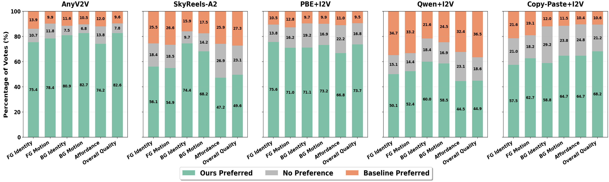

Layer-Aware Video Composition via Split-then-Merge
Supplementary Material
We present Split-then-Merge (StM), a novel framework designed to enhance control in generative video composition. Unlike conventional methods relying on annotated datasets, StM splits unlabeled videos into dynamic foreground and background layers, then self-composes them to learn realistic interactions. In this supplementary file, we provide full video results, comparisons, and dataset details.
- Split-then-Merge Overview (Figure 1)
- Motivation - Figure 2
- Our Results (Figure 1b & 5)
- Additional Experimental Results (Manually Collected Dataset, Logically Impossible, Multi-Object)
- Qualitative Comparison - Figure 6
- Ablation Study
- User Study / VLLM As A Judge
- Dataset Information
- Limitations
Split-then-Merge Overview (Figure 1)
| Training (Figure 1a) | Inference (Figure 1b) |
|---|
Figure 1. Video Composition via Split-then-Merge. (a) Training: The Decomposer splits an unlabeled video into foreground and background layers and generates a caption, while the Composer learns to merge them for reconstruction. (b) Inference: The Composer integrates a foreground video into novel background videos, and ensures affordance-aware placement (e.g., a pig on a forest road, NYC walkway, or lunar surface) with realistic harmonization (motion, lighting, shadows).
Motivation (Figure 2)
Standard approaches fail to solve generative video composition effectively. Image-based methods (Object Insertion + I2V, SkyReels) discard the rich temporal information of the foreground, leading to hallucinated motion. Naive Video methods (Copy-Paste) violate affordance (placing a swan on land), or suffer from appearance drift when fine-tuned naively (black swan turning white).
Our Results (Figure 1b & 5)
StM allows for affordance-aware placement and harmonization. Below we show the results from Figure 1b, where a foreground subject (a pig) is composited into vastly different environments.
Figure 1b: Multi-Scene Composition
Figure 5: Qualitative Results
Results demonstrating robustness in motion preservation and affordance.
Additional Results
Here we provide additional diverse results generated by StM, showcasing various subjects and environments.
Additional Experimental Results
a) Generalization to Manually Collected Backgrounds
We collected backgrounds manually via phone under various conditions to test out-of-distribution generalization.
b) Logically Impossible Composition
We test the model's ability to handle logically impossible or surreal prompts, demonstrating its capacity to harmonize affordance even when the prompt contradicts the physical nature of the background.
c) Multi-Object Composition
We demonstrate sequential multi-object composition. In the first step, we compose a pig into an indoor scene. In the second step, we use the generated video from step 1 as the background and insert a second object (a goat).
Qualitative Comparison (Figure 6)
We compare StM against state-of-the-art baselines including SkyReels, AnyV2V, and cascaded methods (Qwen+I2V, PBE+I2V). StM uniquely preserves complex dynamics (like camera motion) and achieves affordance-aware harmony.
Additional Comparisons
Further comparisons on challenging scenarios involving complex foreground motion and background interactions.
| "A car is turning" (Preservation of Semantic Action & Background) | ||||||
|
Input Foreground
Input Background |
Copy-Paste + I2V | PBE + I2V | Qwen + I2V | AnyV2V | SkyReels | StM (Ours) |
|---|---|---|---|---|---|---|
Ablation Study
We evaluate the contribution of Transformation-Aware Augmentation and Identity-Preservation Loss. Without augmentation, the model learns a "copy-paste" shortcut. Without ID loss, the foreground subject loses its original appearance.
User Study / VLLM As A Judge
We conducted pairwise preference studies using both human raters (50 subjects) and Gemini 2.5 Pro (VLLM) as a judge. StM significantly outperforms baselines in Identity Preservation, Motion Alignment, and FG-BG Harmony.
|

User Study |
|---|

VLLM-as-a-Judge |
|
Limitations
Trade-off: Visual Fidelity vs. Textual Alignment
Our results indicate a trade-off between preserving the source video's motion/identity and strictly adhering to the text prompt. While methods like SkyReels score higher on textual alignment metrics (M4), they often fail to preserve the original motion of the subject. StM prioritizes the visual fidelity of the provided video layers, which provides better control for composition but may result in slightly lower text-alignment scores when the prompt contradicts the visual input.
Complex Occlusions
In scenarios with extreme occlusions in the foreground video, the Decomposer may struggle to extract a clean mask, leading to artifacts in the composition process. Future work will focus on improving the segmentation robustness.
[1] Zhuoyi Yang et al. CogVideoX: Text-to-video diffusion models with an expert transformer. ICLR 2025.
[2] Zhengcong Fei et al. SkyReels-A2: Compose anything in video diffusion transformers. arXiv 2025.
[3] Max Ku et al. AnyV2V: A tuning-free framework for any video-to-video editing tasks. TMLR 2024.
[4] Sihui Ji et al. LayerFlow: A unified model for layer-aware video generation. SIGGRAPH 2025.
[5] Bojia Zi et al. Minimax-Remover: Taming bad noise helps video object removal. arXiv 2025.